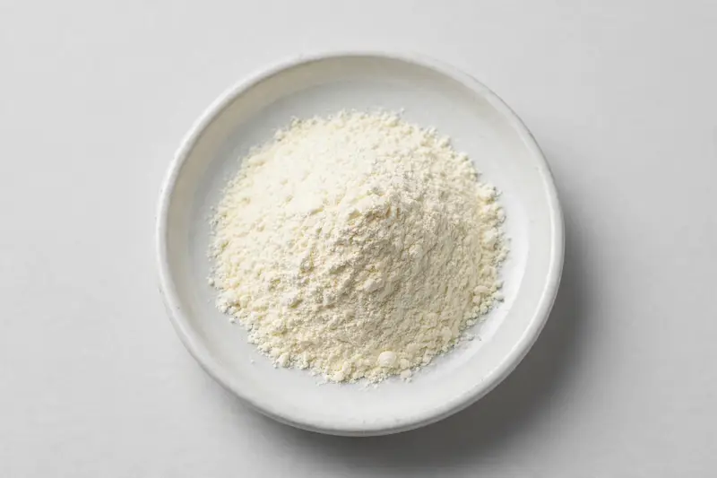

Spray-dried pomelo fruit powder positioned around naringin for beverage and functional-food development.

Overview
Pomelo extract is a spray-dried citrus fruit powder derived from Citrus maxima, processed to retain the fruit's native flavonoid profile and positioned around naringin as the characteristic marker. Formulators working on citrus-forward beverages, powdered drink mixes and functional foods increasingly ask for a pumpable, free-flowing powder rather than fresh fruit solids. As a trading company in Xi'an we source through vetted partner producers; feasibility is confirmed once we receive your target specification.
Specifications below reflect commonly requested options in the market — not a stock list. Share your target spec and we'll confirm exactly what we can supply, honestly.
| Specification | Details |
|---|---|
| Botanical identity | Pomelo extract powder, spray-dried, food-grade |
| Marker compound | Commonly requested spec grades: naringin content and total flavonoids; actual specs confirmed on inquiry |
| Appearance | Off-white to light cream fine powder |
| Mesh size | Typically 80–100 mesh (confirm per inquiry) |
| Testing | COA/TDS arranged on request; scope agreed per your spec |
Applications
Documentation
We don't claim in-house labs or certifications we don't hold. COA and TDS documents can be arranged on request, and testing scope is agreed against your specification before supply.
FAQ
Related products
Theobroma cacao
Key marker: Theobromine 10-20%
View specs →Codonopsis pilosula
Key marker: 10:1 or polysaccharides
View specs →Rehmannia glutinosa
Key marker: 10:1 or catalpol
View specs →Citrullus lanatus
Key marker: Lycopene & L-Citrulline
View specs →Ficus carica
Key marker: Total Soluble Solids
View specs →Send your target spec and volumes — we'll respond with a tailored quotation.
Request a Quote